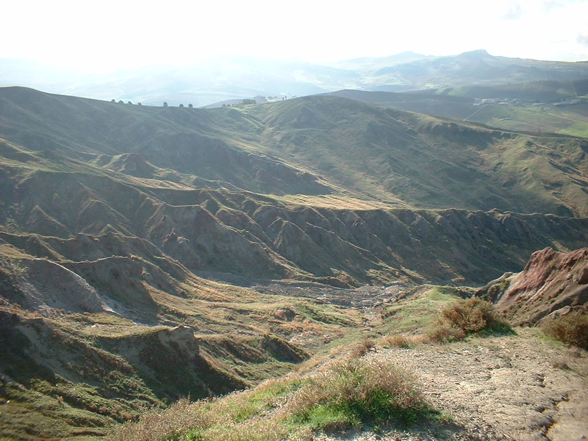

Vallone Spinasanta

ITALIANO - Areale contraddistinto da un sistema calanchivo molto evoluto, a spese delle argille e marne argillose varicolori del Dominio Sicilide, in cui si possono distinguere forme di dilavamento concentrato impostate sui versanti molto acclivi, con un ruscellamento superficiale che spesso evolve in “colate di fango”. Oltre ai fenomeni franosi diffusi è possibile rilevare dei tunnel di suffosione (Piping).
ENGLISH -Area characterized by a very evolved calanchivo system, at the expense of the varicolored clays and clayey marls of Sicilide Dominion, where it is possible to distinguish concentrated forms of run-off set on the slopes very steep, with a surface runoff that often evolves into “mudflows”. In addition to widespread landslide phenomena it is possible to detect suffosion tunnels (Piping).